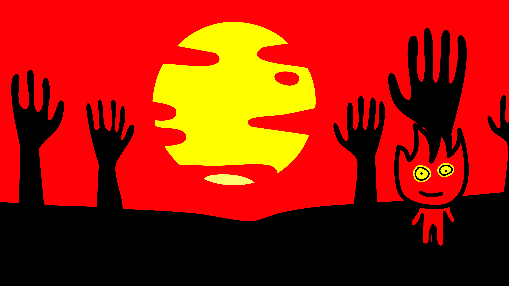
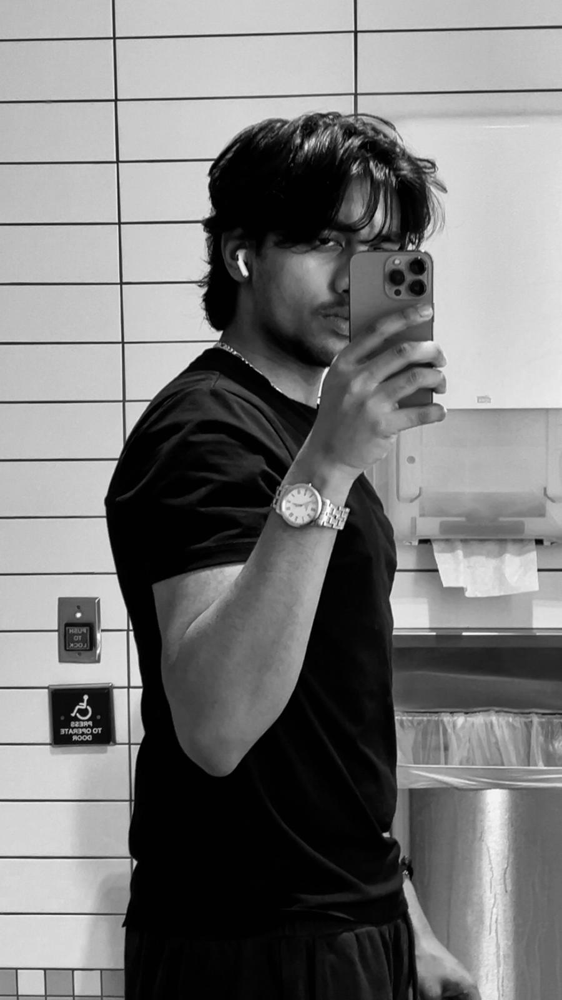

Telling my story through sound, image, and motion
In this self-portrait over time, I inserted myself into an ancient black and white street image of a small aged alleyway with high brick walls, arches, and one street lamp above me. I cut my figure into the middle of the path making it look like I am walking deeper into the scene, where perspective and distance merge with a figure. I adjusted the grayscale aspects of the photo and applied grain and contrast to make my clothes and edges appear like they belong to the same time period. The empty alley contributes to the feeling of a quiet and mysterious moment, like I slipped into the past and am trying not to be caught exploring a place that feels like an extension of myself, yet real.

In this character design project, I recreated Fireboy from the game Fireboy and Watergirl and placed him in a world resembling hell. Rather than the original puzzle environment, I wanted to work with a darker, more dramatic world using bright red tones, a burning yellow sun, and large black silhouetted hands rising from the ground. These hands create tension and contrast, making the small fire character feel both vulnerable and confident at the same time. I used clean vectors, solid outlines, and flat colors to keep the design clear and bold. Each body part was structured in separate layers so the character could be animated in After Effects in the future.
This piece was designed to feel like you are standing inside a living campus, surrounded by everything happening at once. To capture that everyday atmosphere I recorded people chatting, laughing, wind moving through leaves, and birds in the background. I layered in a distant church bell to give the space more depth and make it feel three dimensional. The goal was to show how different sounds collide and coexist in a busy environment. Every layer was edited to feel natural and alive, a sonic snapshot of what campus life actually sounds like.
For this project I chose to parody the 2016 Bollywood film Trapped, directed by Vikramaditya Motwane, where Rajkummar Rao plays a man locked inside his apartment with no food, water, or electricity. I picked this film because it is set entirely in one room, which I knew I could recreate without much equipment or many locations. My version follows a guy who wakes up and finds himself locked in his own room with no way out. Visually I tried to mirror the original as closely as I could, using close ups of hands and door handles, and wide shots of someone just sitting alone staring at nothing. Silence does a lot of work in that original trailer, and I tried to do the same, keeping audio minimal and letting the shots breathe instead of cutting too fast.
Life of Fih is a stop motion animation combining a documentary style of narration with a dramatic story that unfolds underwater. It follows two fish navigating the deep, dealing with love, loss, survival, and an unlikely escape, all performed by sharpeners, scissors, bolts, and chains. The inspiration came from nature documentaries and the idea that even the most ordinary objects can carry real emotional weight when given a story. Underwater ambience audio was used to ground the animation in a believable aquatic world while keeping the visual style clearly handmade and physical. Movement was planned to reflect natural ocean behavior, slow drifts, sudden chases, and erratic predator motion, building tension across the one minute runtime.

I am Saksham Patel, a video producer and digital media creator based in Tempe, Arizona. My work centers on visual storytelling, using pacing, sound, and composition to build narrative and create experiences that feel intentional. I come from a technical background, which shapes how I approach structure and the decisions I make in post-production. I am currently completing a degree in Interactive Digital Media at Arizona State University.
My work starts with concept. Before I open any software or pick up a camera, I need to know the story I want to tell and the feeling I want to leave with the audience. That clarity drives every decision after. I use pacing, sound, and editing as my main tools for building narrative. I am drawn to how these elements work together to shape how something feels, not just how it looks. A lot of my work comes out of constraint. Limited locations, minimal equipment, working alone. Those restrictions push me to be more deliberate about every cut and every sound, and that pressure tends to make the work better. What I am going for is work that makes people feel something. Tension, humor, or just a shift in how they see something familiar. That emotional response is what I am building toward.